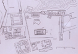
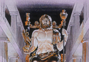

Olympia
Let’s now look finally in a bit more detail at the cult of Zeus Olympios, the great sanctuary of Zeus in Olympia. Olympia is a fertile plain in the northwest Peloponnese. It is part of the territory that was known as Elis. Through the plain runs the river Alpheios. We know that the site had been occupied from the middle of the second millennium B.C.E. The sanctuary of Zeus itself, however, seems from archaeological evidence to have been formed sometime in the tenth century. The chief gods which were worshipped in Olympia were Zeus and Hera, but it is important to note that a variety of gods and goddesses were worshiped at the site.
The sacred enclosure of Zeus was big, with a large altar and temple. Pausanias, a Greek historian who was writing in the 2nd century C.E., is one of our best sources for the sanctuary; he himself would have been drawing upon accounts of earlier historians. He tells us that the altar itself had a circumference of 38.1 metres and that the height of the altar was a massive 6.7 metres. This altar was also very famous for having been made note of stone but out of ash, the remains of sacrifices made to Zeus and also to Hestia, who had a nearby sanctuary. Pausanius describes a process by which they would mix the ash with the water of the Alpheios in order to make a paste to build the altar. Also surrounding the sacred enclosure of Zeus were facilities for the Olympic games. The stadium and Hippodrome (horse racing track) were to the east. To the west there were training facilities such as a wrestling venue and a gymnasium. Also to the west of the enclosure was the workshop of Phidias, a famous sculptor to whom I’ll return in a minute. The entire site was presided over by the sanctuary of Kronos, Zeus’ father. (see image 1) 
{kind=link}
There are two foundation-myths for the cult (by this term ‘cult’ I here mean the religious rites and ceremonies in honour of Zeus: ‘cult’ is used of ancient religious practices without the negative associations of the term in modern English) and the famous Olympian games. One involves the king of nearby Pisa (not related to Pisa Italy) Oinomaos, his daughter Hippodameia, and her suitor Pelops. Oinomaos was said to have imposed as a test on all his daughter’s suitors a chariot-race against himself; but he always won, thanks to the divine horses given him by his father Ares: the defeated claimants were summarily executed. Pelops, however, triumphed over Oinomaos by having Oinomaos’ charioteer Myrtilos sabotage his chariot. Oinomaos was thrown from his chariot and killed, and Pelops (whose name is linked to the Peloponnese) married Hippodameia and became king of Pisa. The chariot games for the hand of Hippodameia thus represent a foundation of the Olympic games. Another myth involves Heracles and one of his 12 labours (which we will examine in more detail later in the course). One of the great labours imposed upon Heracles was to clean out the stables of King Augeias of Elis which he promptly did not with a bucket and shovel, but by diverting the river Alpheios. After doing so, he was said to establish the sanctuary of Zeus and the Olympic games.
Zeus was very much connected with Nike, a minor goddess of victory personified, and in statues he often held a winged victory in one of his hands; this was certainly the case with the large statue of Zeus Olympios made by Phidias. (see image 2) He was, then, a natural god to whom to pray and give thanks for victory, not only in battle, but also in the athletic competitions which were so important to the festival at Olympia. The Olympic games were held every four years in Olympia during the festival to Zeus celebrated at Olympia. The Olympic games were traditionally said to be re-organized (they may have existed earlier) in 776 B.C.E. and held every four years after that. Just as the sanctuary of Zeus Olympios was a pan-Hellenic cult site, to which all Greeks would come to pay tribute, the games themselves were pan-Hellenic games. The establishment of the Olympic games was also particularly important for Greece as it was by these four-year periods that periods of Greek history were recorded. So 420 B.C.E. would have been called in ancient Greece the 90th Olympiad (period of 4 years). Now, the actual historical evidence for games before 700 is doubtful, despite the traditional dating mentioned above. But once established the games continued uninterrupted every four years until 394 C.E., when the Christian emperor Theodosius I banned them along with all other pagan rituals. This itself is an indication of how connected the Olympian games were with the religious festival. This is a fact that we must not forget (considering that for us the modern so-called Olympic games have nothing to do with a specific religion), that the Olympic games in Greece were part of a major religious festival devoted to Zeus. The actual, apart from mythological, religious origins of the games in Olympia are much debated. Some have considered them to have originally been funeral games, much like the funeral games for Patroclus (the friend of the hero Achilles) in the 23rd book of the Iliad. But, whatever the truth, it is clear that during the Classical period, they were religious in nature.
{kind=link}
Before the festival of Zeus Olympios began, there was a long period of preparation, during which Greek athletes would train for the events in which they were to take part. In this sense, our modern Olympic games are not so different. During this period, the Greek world understood a sacred truce, such that people could train and prepare without thoughts of danger. The festival at Olympia itself then lasted for six days. During the first there would have been a great many sacrifices at the ash altar of Zeus, and elsewhere in Olympia. The athletes also swore oaths that they would play fair. Then the remaining 5 days saw competitions in 13 different events. All of the competitors, and even the spectators (with the exception of the priestess of Hera), were all men. The events were the stadion race, double stadion race, long distance race, race in heavy armour, pentathlon, wrestling, boxing, chariot-race, horse-race, and pankration; a junior stadion, wrestling and boxing were also held for the boys. Now, all of the contests were judged by what were called ‘Judges of the Greeks’ (Hellanodikes). Importantly, the decisions of the judges were considered to be sacred, and what they said could not be overturned. This is a perfect example of how connected with religion the games were. Indeed, as a prize, the victors received on the sixth day a wreath of wild olive leaves picked from the sacred grove of Zeus. Priests would go with the victors to the altar to make sacrifices to Zeus and there would then have been held a great feast. This is all very similar to what we might find in a smaller sanctuary, but on a much grander scale; the whole Greek world was involved. Many victors would set up statues to commemorate their victories, and they would have praise poetry written to celebrate their successes.
To conclude, we have seen the prominent role which Zeus/Jupiter plays in the mythological world of the gods. In Hesiod’s Theogony, we encountered the myth of his rise to power through both physical and mental prowess. He remains in the dominant position amongst the gods and is the father of many of the most prominent Olympians in the pantheon, as well as many heroes. At times, however, he is himself constrained by fate. One must not in Zeus (or any other Olympian god) search for moral example. As we can see in his love affairs and other actions, Zeus is both all-powerful and imperfect. He deceives and can also himself be deceived. In this way, Zeus and the other Greek/Roman gods are very human. Despite follies, however, Zeus always remains ultimately in control. Alongside his presentation in mythology, we need also to remember that Zeus was a widely worshipped god in antiquity who played an important role in the religious and everyday actions of the Greeks and Romans.